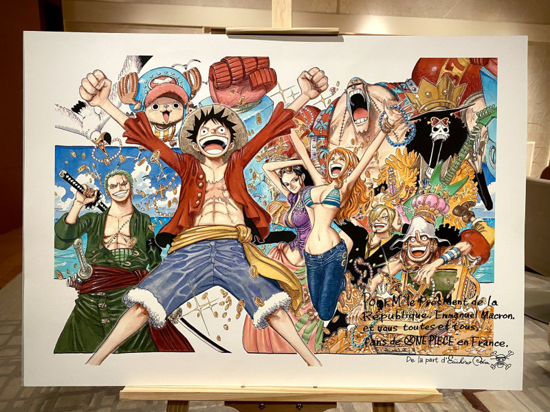
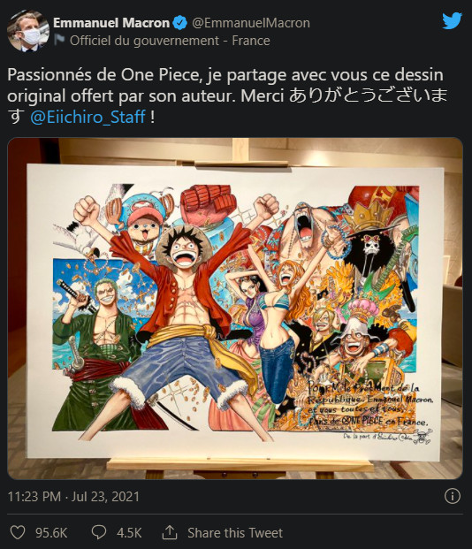

Mới đây, trên Twitter cá nhân, Tổng thống Pháp Emmanuel Macron đã tự hào khoe bức tranh minh họa mà
ông
nhận được từ tác
giả One Piece - Eiichiro Oda. Tweet khi được đăng tải đã làm cho người hâm mộ One Piece trên toàn
thế
giới trở nên tự
hào hơn bao giờ hết.

Trong bức tranh, Oda cũng đã viết những dòng chữ tiếng Pháp rằng tác phẩm dành tặng cho Tổng thống
Pháp
và tất cả người
hâm mộ One Piece tại quốc gia này.
Trên bài đăng ở Twitter, Tổng thống Pháp đồng thời cũng đã gửi lời cảm ơn đến Oda bằng hai ngôn ngữ
tiếng
Pháp và tiếng
Nhật.

Tại Pháp, chỉ riêng tập đầu tiên của manga đã bán được hơn 1 triệu bản tính đến tháng 7. Bộ truyện
chiếm
hữu đến 8,3%
thị trường truyện tranh tại Pháp với hơn 25 triệu bản được bán ra kể từ năm 2013